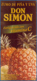

De: La Frikipedia, la enciclopedia extremadamente seria.
De: La Frikipedia, la enciclopedia extremadamente seria. De: La Frikipedia, la enciclopedia extremadamente seria.
| De la serie Países del planeta tierra: | |||||
| Espiña para el niño y la niña | |||||
|---|---|---|---|---|---|
| |||||
| Lema: Una, grande y dulce | |||||
| Himno: Arriba Espiña (Descárgalo)
| |||||
| 
| |||||
| Capital | Manzanid | ||||
| Mayor ciudad | Frutencia | ||||
| Lenguas oficiales | Español acabando las ds en zs y/o gñap | ||||
| Gobierno | Oligarquía frutal | ||||
| El caldillo | Frambuecisco Frutanco | ||||
| Área | España centro | ||||
| Población | 3'cuatrounocincodosmilochomil personas | ||||
| Moneda | ¡¿Dónde, donde?! | ||||
| Zona horaria | GTM ++ | ||||
| Dominio Internet | .frut | ||||
| Código telefónico | Sólo tienen frutitofonos
| ||||
| Lugar ideal de vacaciones para los que sufren escorbuto | |||||
Este artículo trata sobre la piña mata niños. Para el país donde los ricos son más ricos y los pobres están jodidos, véase España.
«¡¡Arriba Espiña!!»
~ Frambuecisco Frutanco cuando nadie le ve en la ducha
Espiña fue una dictadura frutal de piñas acaecida entre los años 1939 y 1975.
Tras ganar el general Frutanco la guerra civil, España pasa a llamarse Espiña, poniéndose él solito el sobrenombre de "El Membrillísimo". Sus partidarios lo llamaban Claudillo. Se trataba sin duda de una sutil referencia a las ciruelas claudias, por la cagalera que solía darle a sus enemigos cuando eran capturados dada su tendencia a ponerlos en la picota. En cambio, sus detractores lo apodaron, menos caritativamente, "el fruto enano".
En esta época se abolieron todos los partidos menos la Platange de las co-JONS, rendiendo tributo a José Antonio Primo de Rivera del Duero. También se instauró el sindicato erecto, o vertical, como se empeñan algunos en llamarlo.
Entre las atrocidades cometidas por este régimen destaca el hecho de sacar de noche a los del bando contrario a la carretera y hacerlos dulce de compota. A pesar de todo, ¡Viva Frutanco!
División de las Remolachas, especializado en Tierra, su objetivo es robar terrenos a los países vecinos como quien no quiere la cosa, de hecho cada año añaden 1 km cuadrado por el oeste, se lo hurtan a Plantugal, la Pólis de las plantas; por el Norte hurtan a Flancia, la tierra de los derivados del huevo. Al mando tienen a L.T. Ramolaccio, un experimentado topo, es ciego, pero tiene un gran olfato.
División de las Piñas, especializado en terreno subterráneo, su objetivo es cagar a piñazos a todo aquel que se oponga en la alcantarillas, el subsuelo y en tierra también, igualmente eran utilizadas como proyectiles que herían a varios hombres humanos a la vez, por lo que era una de las frutas más esenciales en la guerra.
División de las Alcachofas, especializadas en el mar y dirigidas por el aclamado S.C. (Subclaudillo) Hortense, su misión principal es acceder a países Paisajicos, como Jamón o las islas Fruichi, para robar las ultimas tecnologías en ensaladas o incluso misiles nucleares.
División de los Productos Lácteos, es tal vez la mas experimentada en cuanto a aeronáutica se refiere, tienen las ultimas tecnologías, el cerebro de esta división es el científico Don. Román Tequila; destaca su innovadora ametralladora LKS-Inmunitas. Suelen ir transportadas en Vasos, son unos aviones que utilizan el camuflaje vacuno (blancos con manchas negras) para hacerse invisible ante el enemigo.
División de los Carapánidos manzaneros, principalmente se emplea esta fuerza de choque para aplacar los ataques de las caperuzas rojas acarapanizadas, es decir, con contenido de pan en un alto índice de venenismo disneylandés.
División de los Cítricos, principalmente son los ayudantes de los Productos Lácteos, te disparan con sus metralletas cargadas con limones, su jefe es el Sargento Naranjario Toronjillo, que poseen una cuadrilla de toronjeros especializados en ataques y repliegues, y los atacan a naranjazos, en casos especiales a toronjazos. y quien se coma las naranjas o toronjas con las que atacan, tendrán chorrillo a cascadas, gracias a su poderoso laxante tóxico.

|
¡Girasol! con la camisa hortera Plantaré junto a las remolachas Si me das frutas tropicales Volveré con bananas muy sabrosas Volverá a reír la prima Vera Arriba plantaciones a vencer
|

|
| Extracto del Himno de Las Solemnes Plantaciones. |
El himno Espiñol, hoy en día se canta por toda Espiña, en los colegios, en los partidos de futbol; de hehco cada Martes sale toda Espiña a la plaza de Madriz para cantar juntos este himno, coloquialmente llamado El himno del canalla.
|
|
Arriba, Espiña! ¡ Frasco, Frasco ! Agua a las frutas que intenta salir, Juntos con el cantemos de pie
|
|
| Extracto del Himno Oficial Espiñol. |
Espiña no siempre ha sido un país frutal. De los siglos IIX al XII estuvo dominada por Berberechos y Mozalbetes que impusieron un duro régimen dirigido y digerido por el Capitán Mejillón y que duró la mar de tiempo. Afortunadamente el régimen cayó con la invasión muslámica. Los crustáceos se cagaron en la concha de su madre.
Posteriormente los pueblos muslámicos invadieron el terreno patrio durante un ataque de lascivia de su líder. Fue pan comido para ellos y se comieron a los Berberechos con patas. Un siglo más tarde acabaron todos hasta la polla y fueron convertidos por la frutinquisición al frutismo.
El gran enemigo de Espiña es la región de los Fruitis, una tribu que creció entorno al cráter de un volcán (algo estúpido) y cuyo Emperador es una chica de 6 años, tapada con dos hojas y que habla con frutas. Sus ayudantes son el General Mochilo, el Capitan Pincho y San Gazpacho, este último es el predicador de su religión, el Fruitismo.
Igualmente tiene una tensa relación con su vecina Flancia, dirigida con mano de hierro (concretamente de cuchara) por el emperador Natillón Tercero después de que invadieran el territorio de Espiña y pusieran al mando al general Pepe Natilla.
Espiña tenía una buena relación diplomática con el Régimen Nuezí, despues de que los líderes de ambos países se juntaran el la estación fronteriza de Papaya En época de Francisco Frutanco (El membrillísimo), Arándano Hitler y su mujer Uva Braun también jugaban a las batallitas con sus enemigos. Frutanco, como no quería participar (acababa de tener una guerra frutil en su huerto), le donaba muchísimas espiñas para que se deleitase y siguiesen siendo dulces cacahuetes amiguetes. La relación con su otro aliado Bananito Mussolini no era tan cercana y por eso solo le solía regalar moras del bosque.
  Imperios de Europa Imperios de Europa
|
|---|
| Eslovaquia |
Autor(es):